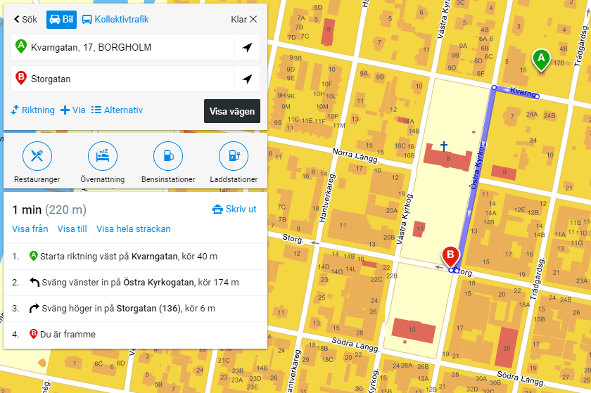

Gågatan



Inom 200 m så har ni Borgholms gågata!
Här finns restauranger, krogar, torghandel, bagerier och mycket mer. Gågatan, eller Storgatan som den heter, leder ner mot båthamnen där fler restauranger krogar finns.